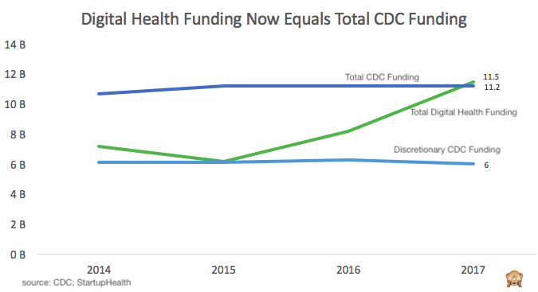

Sign up for my weekly newsletter here
It’s a truism to say that Washington is broken. We may or may not be in a government shutdown when you read this, Congress sucks, and our President is an orange genius.
It’s also a truism to say that when a power vacuum exists, other forces quickly rush in to fill the vacuum. When governments fail, this often takes the form of a military coup, a dictator, or populist insurgent. In the 21st century though, we’re much to distracted by our phones and feeds to latch on to the archetypal revolutionary (unless, of course, that “revolutionary” pops up in our feeds incessantly; see, supra orange genius).
Now the U.S. is nowhere near “failing state” status, but Washington’s incompetence has left glaring gaps that need filling. From our crumbling infrastructure to lack of basic research funding and failure to lead in crucial areas of science and technology, increasingly America must turn elsewhere. And so we have.
To use a few examples:
Perhaps most importantly, large tech companies are now funding the R&D driving future technologies like machine learning, while the federal government sits on the sidelines:
“Annual federal funding for all computer science and mathematics R&D [at the National Science Foundation] is less than half of what Google alone spends”
By the way, while our government has neglected to invest in A.I., China has not. And our President seems intent on exacerbating this gap between the U.S. and China; a President that really wanted to be “tough on China” would recognize the importance of “winning” on this front.
Let’s dig a little deeper into the smart thermometer example above. A digital health startup, Kinsa, has been tracking individuals’ temperatures when its smart thermometer is used, and because of the data it gathers, can now track flu trends as well as the CDC. Kinsa has received $30 million in venture funding; $17 million of this was raised last year, a mere fraction of the $11.5 billion in total private digital health funding in 2017. In fact, in 2017, total digital health funding rose above total CDC funding. These are companies pursuing machine learning in healthcare and public health, early cancer detection, and genomics aimed at personalizing care.
Click here to read to full blog post, and view past posts here:
Or, find my unordered (ul) thoughts on Twitter.